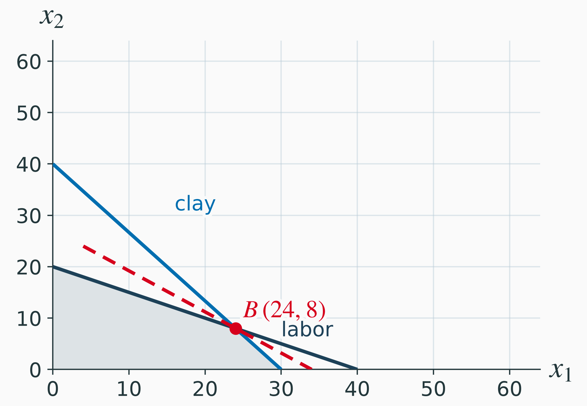
Linear Programming
Computer Solution and Sensitivity Analysis
Sebastian Souyris
MGMT 4100 Fall 2026
Roadmap
\[ \newcommand{\argmax}{\operatorname*{argmax}} \newcommand{\argmin}{\operatorname*{argmin}} \newcommand{\E}{\operatorname{\mathbb{E}}} \newcommand{\Var}{\operatorname{Var}} \newcommand{\Cov}{\operatorname{Cov}} \newcommand{\Corr}{\operatorname{Corr}} \newcommand{\plim}{\operatorname{plim}} \newcommand{\tr}{\operatorname{tr}} \newcommand{\rank}{\operatorname{rank}} \newcommand{\N}{\mathcal{N}} \newcommand{\R}{\mathbb{R}} \newcommand{\iid}{\overset{\text{i.i.d.}}{\sim}} \newcommand{\inprob}{\xrightarrow{\;p\;}} \newcommand{\indist}{\xrightarrow{\;d\;}} \newcommand{\eps}{\varepsilon} \newcommand{\bm}[1]{\boldsymbol{#1}} \]
Computer Solution
Computer Solution
- The Simplex Method is the most used algorithm to solve LP problems
- Its steps have been programmed into software packages designed for linear programming
- Many such packages are currently available; they are used extensively in business and government
This Week’s Tool
Excel Solver. You formulate the model; Solver runs the algorithm and reports the solution plus a sensitivity analysis.
Beaver Creek Pottery in Excel: Data Screen
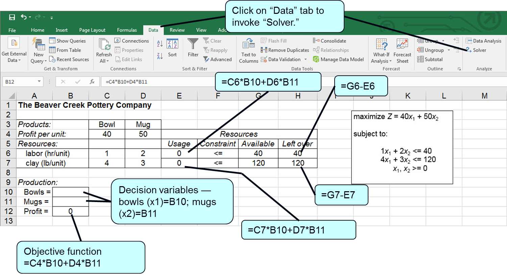
Beaver Creek Pottery: Solver Parameter Screen
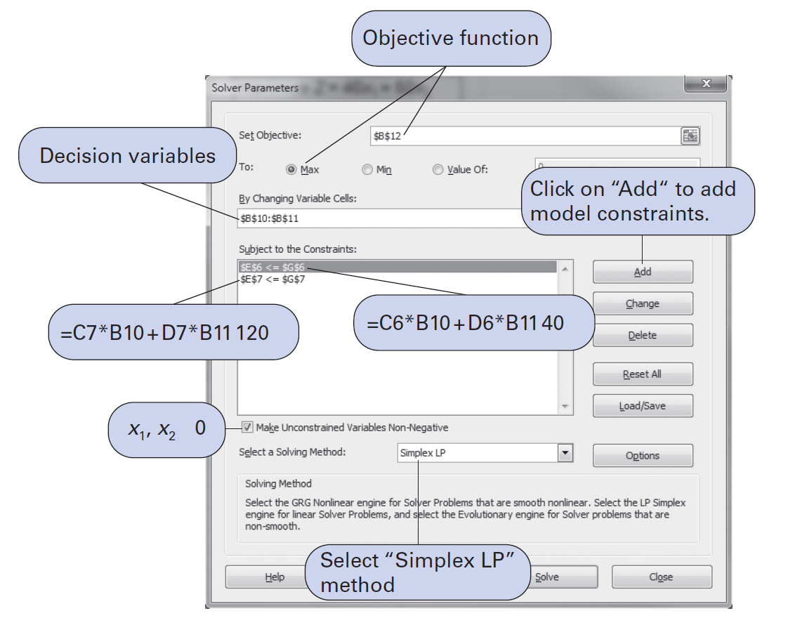
Beaver Creek Pottery: Adding Model Constraints
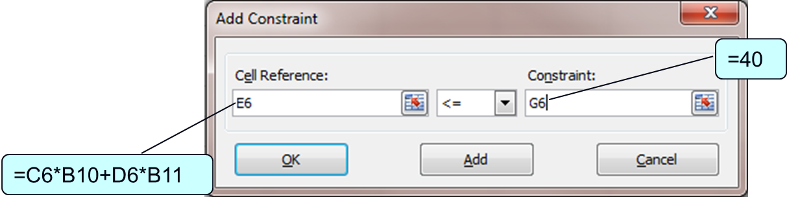
Beaver Creek Pottery: Solver Settings
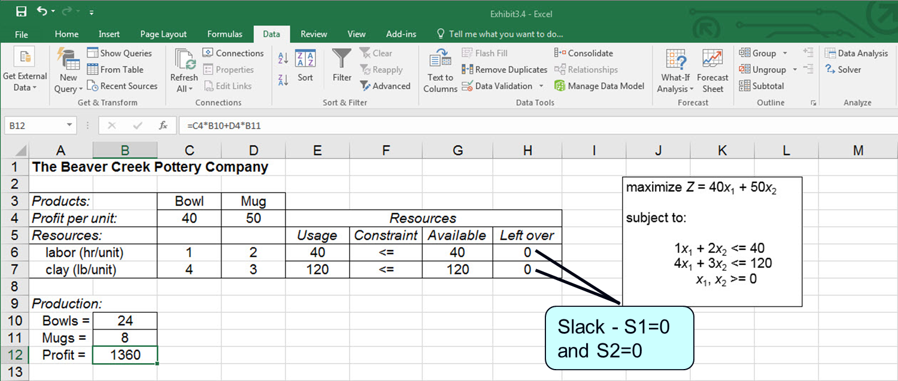
Beaver Creek Pottery: Solution Screen
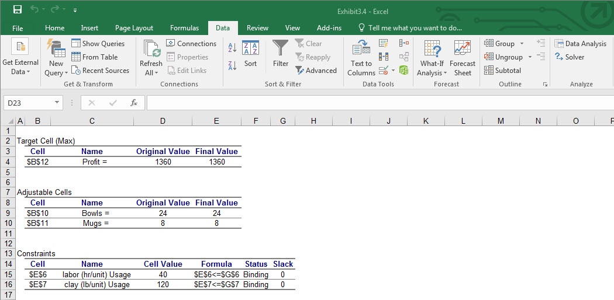
Linear Programming Problem: Standard Form
Standard form requires all variables on the left of the inequality (or equality) and all numeric values on the right-hand side.
Examples:
- \(x_3 \ge x_1 + x_2\) must be converted to \(x_3 - x_1 - x_2 \ge 0\)
- Recall the hot dog mixture from last class. Add pork (\(x_3\)) to chicken (\(x_1\)) and beef (\(x_2\)), and require at least twice as much chicken as beef and pork combined: \(\frac{x_1}{x_2 + x_3} \ge 2\) becomes \(x_1 \ge 2(x_2 + x_3)\) and then \(x_1 - 2x_2 - 2x_3 \ge 0\)
Solver Needs Standard Form
Ratio constraints entered as fractions confuse Solver and violate linearity. Always clear the denominator first. Full model
Sensitivity Analysis
What Is Sensitivity Analysis?
Sensitivity Analysis
Determines the effect on the optimal solution of changes in parameter values of the objective function and constraint equations.
- Changes may be reactions to anticipated uncertainty in the parameters
- Or to new or changed information concerning the model
Why Managers Care
Data are estimates. Sensitivity analysis tells you which estimates the recommendation depends on, and by how much they can move before the decision changes.
Beaver Creek Pottery: Optimal Solution Point
\[ \begin{aligned} \text{Max } Z ={}& \$40x_1 + \$50x_2 \\ \text{s.t.}\quad & x_1 + 2x_2 \le 40 \\ & 4x_1 + 3x_2 \le 120 \\ & x_1,\, x_2 \ge 0 \end{aligned} \]
The base case: optimal at \({B\,(24, 8)}\) with \(Z = \$1{,}360\). All sensitivity questions start from here.
Changing the \(x_1\) Objective Function Coefficient
Raise bowl profit from $40 to $100:
\[ Z = 100x_1 + 50x_2 \]
The profit line becomes steeper than the clay constraint, and the optimal point rotates to \(C\,(30, 0)\): make only bowls.
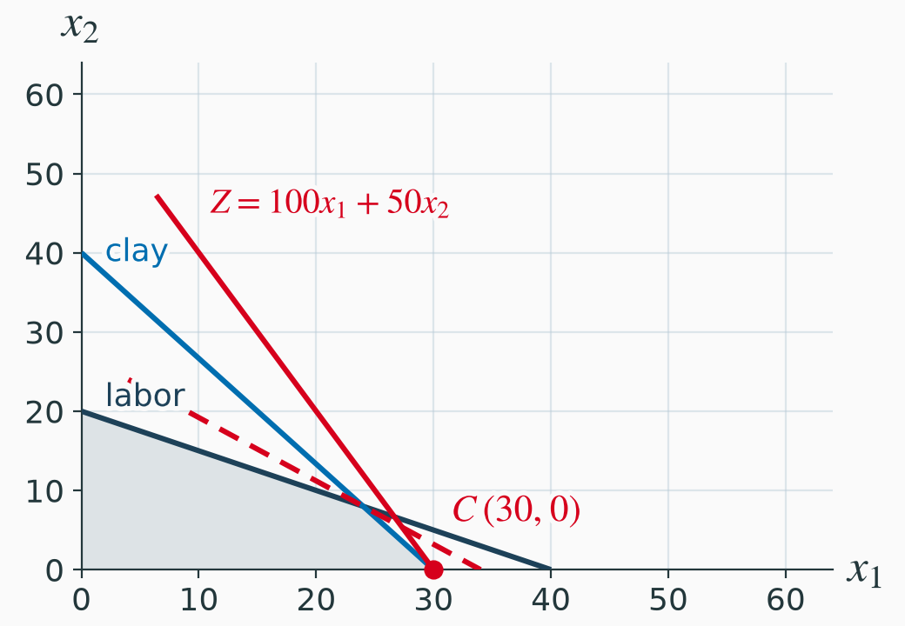
Changing the \(x_2\) Objective Function Coefficient
Raise mug profit from $50 to $100:
\[ Z = 40x_1 + 100x_2 \]
The profit line becomes flatter than the labor constraint, and the optimal point rotates to \(A\,(0, 20)\): make only mugs.
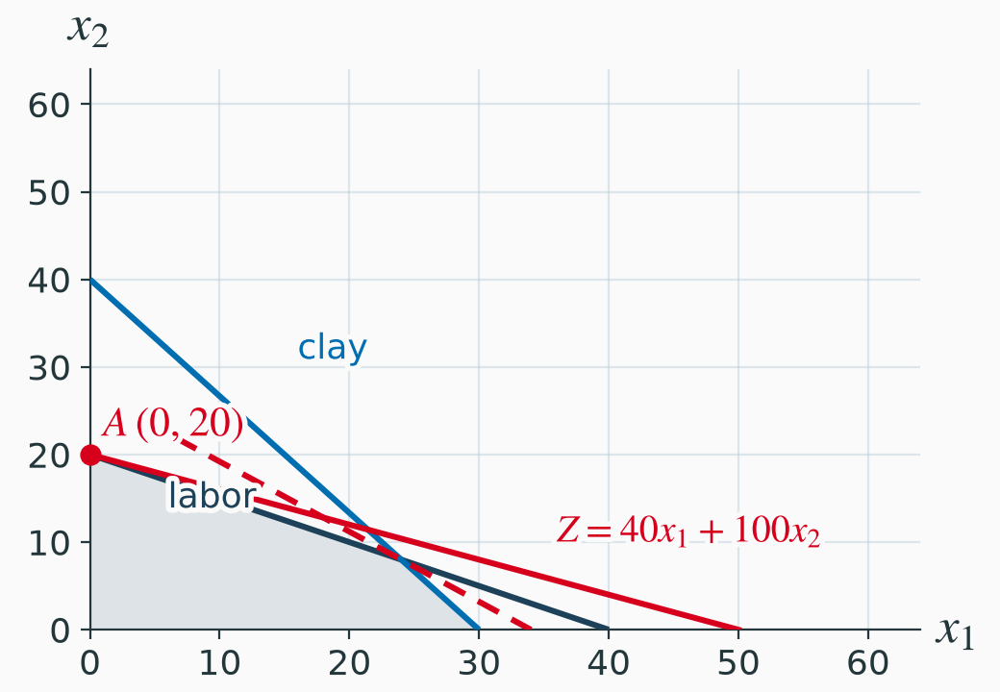
Objective Coefficient: Sensitivity Range
Sensitivity Range for \(c_i\)
The range of values over which the current optimal solution point remains optimal.
The objective function \(Z = \$40x_1 + \$50x_2\) rearranges to
\[ x_2 = \frac{Z}{50} - \frac{4}{5}\,x_1 \qquad \Longrightarrow \qquad \text{slope} = -\frac{4}{5} \]
The optimal point stays at \(B\) while the objective slope lies between the slopes of the two binding constraints: labor (\(-\tfrac{1}{2}\)) and clay (\(-\tfrac{4}{3}\)).
Sensitivity Range for \(c_1\) and \(c_2\)
For \(c_1\) (bowl profit), hold \(c_2 = 50\):
\[ -\frac{4}{3} \le -\frac{c_1}{50} \le -\frac{1}{2} \]
Ranges at \(B\)
\(25 \le c_1 \le 66.67\)
\(30 \le c_2 \le 80\)
At the endpoints the objective is parallel to a constraint: multiple optima.
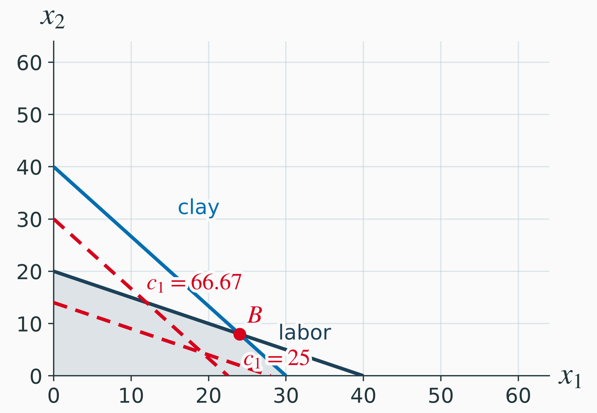
Sensitivity Range: Fertilizer Cost Example
\[ \begin{aligned} \text{Min } Z ={}& \$6x_1 + \$3x_2 \\ \text{s.t.}\quad & 2x_1 + 4x_2 \ge 16 \\ & 4x_1 + 3x_2 \ge 24 \\ & x_1,\, x_2 \ge 0 \end{aligned} \]
Range for \(c_1\)
\(4 \le c_1 < \infty\). Below $4 per bag, Super-gro enters the mix (\(A\) moves to \(B\)).
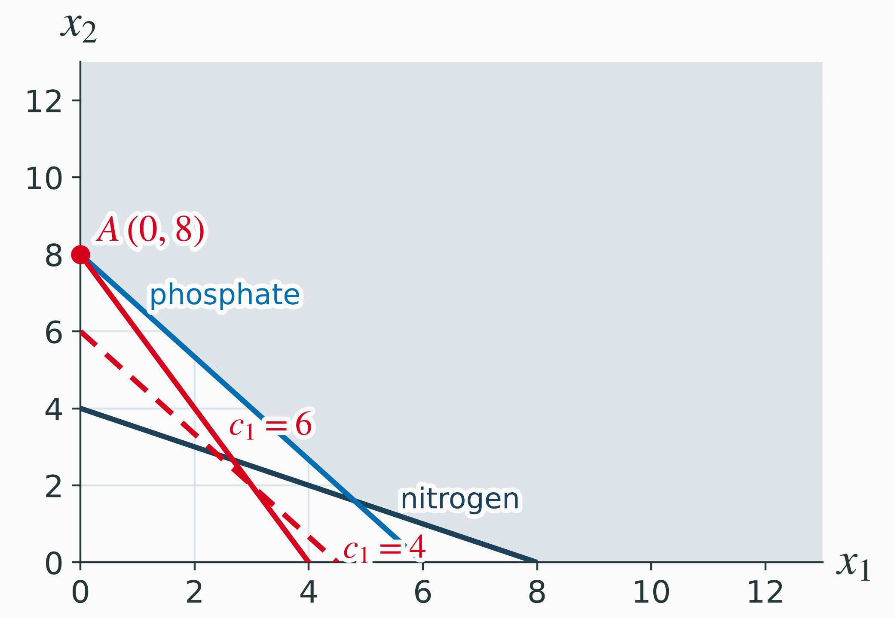
Solver Results Screen
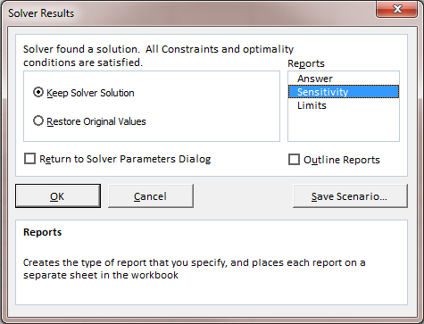
Beaver Creek: Sensitivity Report
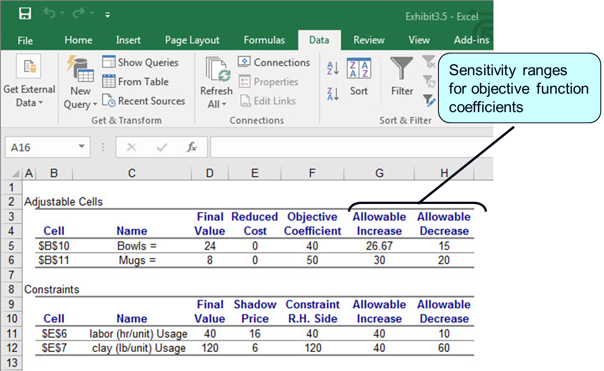
Changes in Constraint Quantity (RHS) Values
Sensitivity Range for a RHS Value
The range of values over which the quantity can change without changing the solution variable mix, including the slack variables.
Recall Beaver Creek Pottery. Consider a change in which the manager can increase labor hours from 40 to 60.
Which resources are worth acquiring, and up to what point? That is the managerial payoff of RHS sensitivity analysis.
Increasing the Labor Constraint to 60 Hours
New labor constraint: \({x_1 + 2x_2 \le 60}\).
New Solution
\(x_1 = 12\), \(x_2 = 24\)
\(Z = \$1{,}680\)
Profit rises by \({\$1{,}680 - \$1{,}360} = \$320\) for 20 extra hours: $16 per hour. Remember that number.
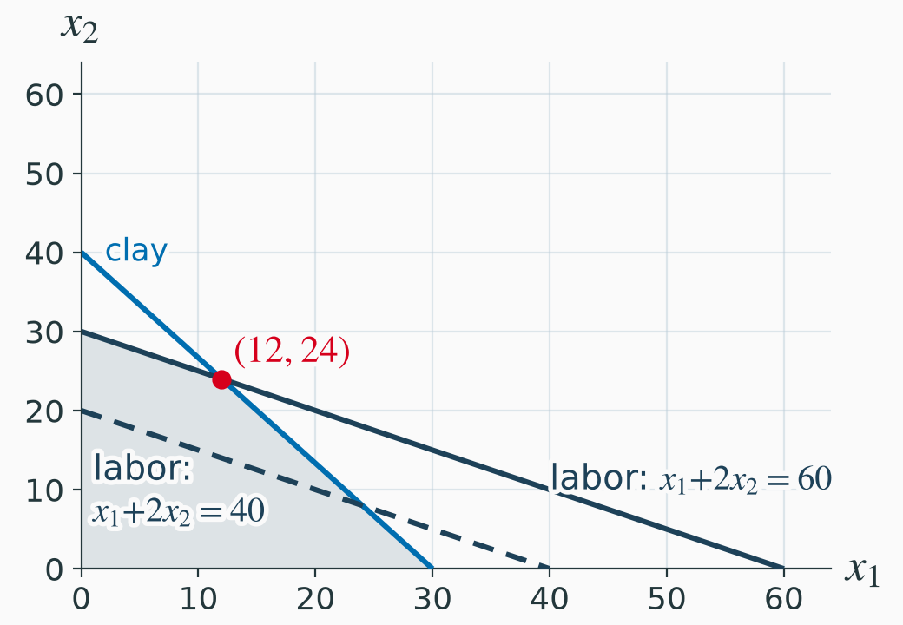
Sensitivity Range for the Labor Quantity
Slide the labor line in and out while clay stays fixed. The solution mix (\({x_1, x_2 > 0}\), both constraints binding) survives for
\[ 30 \le q_1 \le 80 \]
At \(q_1 = 30\) the corner collapses into \(C\,(30,0)\); at \(q_1 = 80\) it reaches \((0,40)\), the clay intercept.
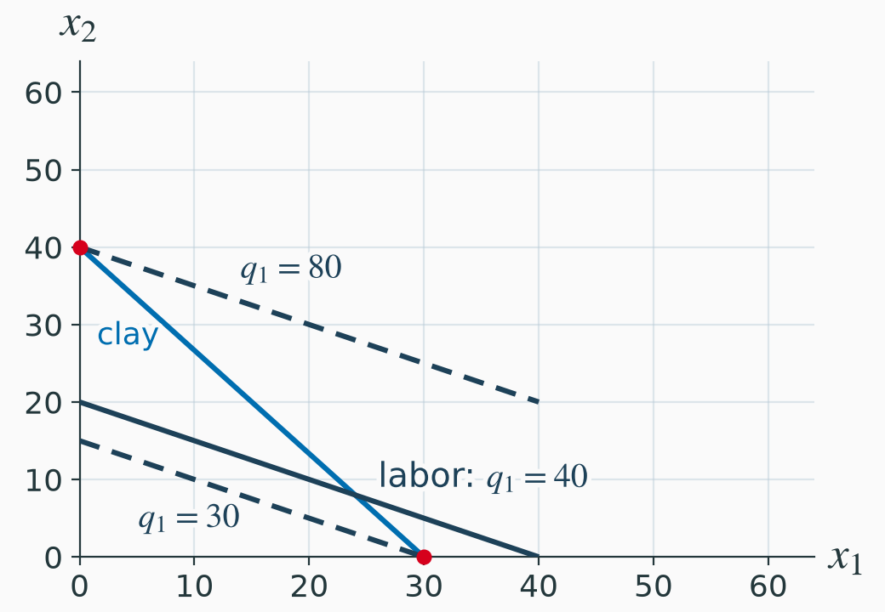
Sensitivity Range for the Clay Quantity
Now slide the clay line while labor stays fixed. The solution mix survives for
\[ 60 \le q_2 \le 160 \]
At \(q_2 = 60\) the corner collapses into \(A\,(0,20)\); at \(q_2 = 160\) it reaches \((40,0)\), the labor intercept.
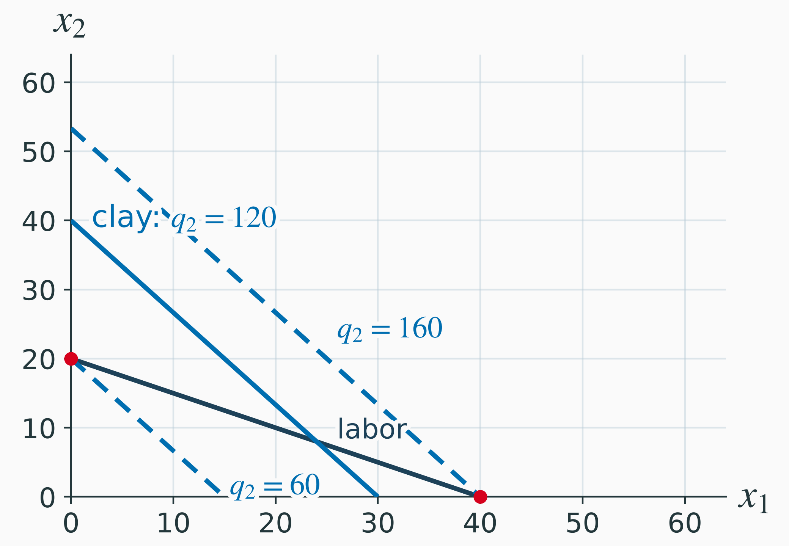
Sensitivity Explorer: Beaver Creek Pottery
Move a profit or a resource, or switch a constraint off. Watch the corner and the shadow prices.
Show code
Show code
Show code
// The gallery's gate, and its reason: a bare `MathJax` in a cell binds to
// the config object mathjax-setup.html leaves on window, and under
// MathJax 4 only tex2svgPromise survives glyphs that load on demand.
mathjax = {
while (!(window.MathJax && typeof window.MathJax.tex2svgPromise === "function")) {
await new Promise(r => setTimeout(r, 60));
}
return window.MathJax;
}Show code
// A TWO-VARIABLE LP, SOLVED EXACTLY IN THE BROWSER. Every constraint is
// a1*x1 + a2*x2 <= b with x1, x2 >= 0 and the objective is a maximum, which
// covers both models in this deck. The optimum of a bounded LP is a
// corner, and every corner is the meeting of two of the bounding lines,
// so enumerating the pairs is the whole solver (the gallery's recipe 7
// does the same). A shadow price is found the way the lecture defines
// it: re-solve with one more unit of the resource and take the change in
// Z. That is the price for the NEXT unit, so at the top of a range it
// reads the new value (labor at 80 hours shows $0, not $16).
LP = {
const EPS = 1e-7;
const zOf = (c, p) => c.c1 * p.x + c.c2 * p.y;
function vertices(cons) {
if (!cons.length) return [];
const lines = cons.map(k => ({a: k.a1, b: k.a2, r: k.b}))
.concat([{a: 1, b: 0, r: 0}, {a: 0, b: 1, r: 0}]);
const pts = [];
for (let i = 0; i < lines.length; i++)
for (let j = i + 1; j < lines.length; j++) {
const L = lines[i], M = lines[j];
const det = L.a * M.b - M.a * L.b;
if (Math.abs(det) < 1e-12) continue;
const x = (L.r * M.b - M.r * L.b) / det;
const y = (L.a * M.r - M.a * L.r) / det;
if (x < -EPS || y < -EPS) continue;
if (cons.some(k => k.a1 * x + k.a2 * y > k.b + EPS)) continue;
if (pts.some(p => Math.hypot(p.x - x, p.y - y) < EPS)) continue;
pts.push({x: Math.max(0, x), y: Math.max(0, y)});
}
const cx = d3.mean(pts, p => p.x), cy = d3.mean(pts, p => p.y);
return d3.sort(pts, p => Math.atan2(p.y - cy, p.x - cx));
}
function best(pts, c) {
return pts.reduce((top, p) => {
const z = zOf(c, p);
return !top || z > top.z + 1e-9 ? {x: p.x, y: p.y, z} : top;
}, null);
}
// Each constraint drawn across the whole frame, as in recipe 7, with a
// label along it. Recipe 7 puts each label at a fixed fraction of its
// segment, which holds for a model whose picture never changes shape.
// Here the sliders move the optimum and the frame, and a fixed fraction
// put "labor" on top of "(12, 24)" at 60 hours and hid "clay" under
// both [observed]. So the fraction is a preference: `label_at` on the
// constraint, else LABEL_AT, and if the label's box would overlap the
// optimum's dot, its label, an earlier line's label or the frame edge,
// the next fraction in the list is tried. Boxes are estimated in plot
// pixels from the character count (13px type, about 7px a character).
const LABEL_AT = [0.42, 0.78, 0.6];
const TRIES = [0.2, 0.5, 0.8, 0.35, 0.65, 0.1, 0.9];
function clip(cons, domain, unit, opt) {
const [xmax, ymax] = [domain.x[1], domain.y[1]];
const [W, H] = [xmax * unit, ymax * unit];
// Plot's dx: 30, dy: -9 on the label, in y-up pixels.
const boxAt = (x, y, text) => {
const cx = x * unit + 30, cy = y * unit + 9, hw = 3.6 * text.length;
return {x0: cx - hw, x1: cx + hw, y0: cy - 8, y1: cy + 8};
};
const overlap = (a, b) =>
a.x0 < b.x1 + 4 && b.x0 < a.x1 + 4 && a.y0 < b.y1 + 4 && b.y0 < a.y1 + 4;
const taken = [];
if (opt) {
const [ox, oy] = [opt.x * unit, opt.y * unit];
const text = `(${fmt(opt.x)}, ${fmt(opt.y)})`;
taken.push({x0: ox - 8, x1: ox + 8, y0: oy - 8, y1: oy + 8});
taken.push({x0: ox + 10, x1: ox + 10 + 8 * text.length, y0: oy + 3, y1: oy + 21});
}
return cons.map(k => {
const hit = [];
if (k.a2 !== 0) for (const x of [0, xmax]) {
const y = (k.b - k.a1 * x) / k.a2;
if (y >= -EPS && y <= ymax + EPS) hit.push({x, y});
}
if (k.a1 !== 0) for (const y of [0, ymax]) {
const x = (k.b - k.a2 * y) / k.a1;
if (x >= -EPS && x <= xmax + EPS) hit.push({x, y});
}
const uniq = hit.filter((p, i) =>
hit.findIndex(q => Math.hypot(q.x - p.x, q.y - p.y) < EPS) === i);
const [p0, p1] = uniq;
const at = (f) => ({x: p0.x + f * (p1.x - p0.x), y: p0.y + f * (p1.y - p0.y)});
let label = null;
if (p1) {
const pref = k.label_at ?? LABEL_AT[k.idx % LABEL_AT.length];
for (const f of [pref].concat(TRIES)) {
const p = at(f), box = boxAt(p.x, p.y, k.name);
if (box.x0 < 0 || box.x1 > W || box.y0 < 0 || box.y1 > H) continue;
if (taken.some(t => overlap(t, box))) continue;
taken.push(box);
label = p;
break;
}
// Nowhere clear: keep the preference rather than drop the name.
if (!label) label = at(pref);
}
return {name: k.name, idx: k.idx, points: uniq, label};
}).filter(l => l.points.length === 2);
}
// Recipe 7's fixed box at one scale for both axes, so the region's shape
// is true whatever the sliders do. 330 tall rather than the recipe's
// 352, and a model may ask for less with `plot_h`: the airplane's three
// constraint rows and five sliders make its left column the tall one,
// and its two-line readout came down onto the footline [observed].
function fit(domain, maxH = 330) {
const maxW = 330;
const [ml, mr, mt, mb] = [58, 18, 22, 42];
const xs = domain.x[1] - domain.x[0], ys = domain.y[1] - domain.y[0];
const unit = Math.min((maxW - ml - mr) / xs, (maxH - mt - mb) / ys);
return {unit, width: unit * xs + ml + mr, height: unit * ys + mt + mb};
}
const withB = (model, b) => model.cons.map((k, i) => ({...k, b: b[i], idx: i}));
const baseB = (model) => model.cons.map(k => k.b);
function state(model, params, parts) {
const useObjective = parts.includes("objective");
const c = {c1: params.c1, c2: params.c2};
const cons = withB(model, model.cons.map((k, i) => params[`b${i}`]))
.filter(k => parts.includes(k.name));
const unbounded = cons.length === 0;
const verts = vertices(cons);
const opt = useObjective && !unbounded ? best(verts, c) : null;
const binding = opt
? cons.filter(k => Math.abs(k.a1 * opt.x + k.a2 * opt.y - k.b) < 1e-6) : [];
const shadow = opt ? cons.map(k => {
const more = cons.map(m => m === k ? {...m, b: m.b + 1} : m);
return {name: k.name, unit: k.unit, price: best(vertices(more), c).z - opt.z};
}) : [];
// DOMAIN. Recipe 7 fits the frame to the current region. Here the
// frame never shrinks below the base case, because a sensitivity
// slide is about watching a line move against fixed axes: with a
// frame that refits on every drag, cutting labor to 30 hours rescales
// the picture and the region appears not to shrink at all.
const baseV = vertices(withB(model, baseB(model)));
const reach = verts.length ? verts : baseV;
const top = (key) => Math.max(1, Math.ceil(
Math.max(d3.max(baseV, v => v[key]), d3.max(reach, v => v[key])) * 1.04));
const domain = {x: [0, top("x")], y: [0, top("y")]};
const box = fit(domain, model.plot_h);
return {useObjective, c, cons, unbounded, verts, opt, binding, shadow, domain,
region: verts.length ? verts.concat(verts.slice(0, 1)) : [],
lines: clip(cons, domain, box.unit, opt), fit: box};
}
const fmt = (v) => Math.abs(v - Math.round(v)) < 1e-9 ? String(Math.round(v)) : v.toFixed(2);
const money = (v) => Math.abs(v - Math.round(v)) < 1e-9
? d3.format(",")(Math.round(v)) : d3.format(",.2f")(v);
// The model in TeX from the live numbers, the four (or five) values a
// slider moves in RPI red. Recipe 7's array, its \rlap + \hphantom row
// alignment, and its warning: every backslash headed for TeX from a JS
// template literal needs two, or `\;` arrives as a bare semicolon.
function tex(model, st, params) {
const n = (v) => String(v);
const coef = (v) => v === 1 ? "" : n(v);
const live = (v) => `\\textcolor{${rpi.red}}{${n(v)}}`;
const rows = st.cons.map(k =>
`& ${coef(k.a1)}x_1 & {}+${coef(k.a2)}x_2 & \\le & ${live(k.b)} & \\text{(${k.name})}`);
const objective = st.useObjective
? `\\max\\; Z = & ${live(params.c1)}x_1 & {}+${live(params.c2)}x_2 \\\\`
: `\\text{find} & x_1, & x_2 \\\\`;
const subject = rows.length
? `\\text{s.t.} ${rows.join(" \\\\\n ")} \\\\`
: `\\text{s.t.} & \\text{(none)} \\\\`;
const widest = st.cons.length
? st.cons.map(k => `${coef(k.a1)}x_1`).reduce((a, b) => b.length > a.length ? b : a)
: "x_1";
return `\\begin{array}{l@{\\;}r@{\\;}r@{\\;}c@{\\;}l@{\\;\\;}l}
${objective}
${subject}
& \\rlap{x_1,\\; x_2 \\ge 0}\\hphantom{${widest}}
\\end{array}`;
}
async function modelBox(model, st, params, mj) {
const box = htl.html`<div class="rpi-model"></div>`;
box.appendChild(await mj.tex2svgPromise(tex(model, st, params), {display: true}));
return box;
}
function partsOf(model) { return ["objective"].concat(model.cons.map(k => k.name)); }
function controls(model) {
const o = model.obj;
const inputs = {
c1: Inputs.range(o.range, {value: o.c1, step: o.step, label: o.labels[0]}),
c2: Inputs.range(o.range, {value: o.c2, step: o.step, label: o.labels[1]})
};
model.cons.forEach((k, i) => {
inputs[`b${i}`] = Inputs.range(k.range, {value: k.b, step: k.step, label: k.label});
});
return Inputs.form(inputs, {template: (i) =>
htl.html`<div class="rpi-controls rpi-stack">${Object.values(i)}</div>`});
}
function baseParams(model) {
const p = {c1: model.obj.c1, c2: model.obj.c2};
model.cons.forEach((k, i) => { p[`b${i}`] = k.b; });
return p;
}
const RAMP = [rpi.blue, rpi.link, rpi.sky];
function plot(model, st) {
const o = st.opt;
return Plot.plot({
...frame,
width: st.fit.width,
height: st.fit.height,
marginTop: 22,
marginRight: 18,
x: {label: `${model.x1.label} x₁ →`, grid: true, domain: st.domain.x, ticks: 6},
y: {label: `↑ ${model.x2.label} x₂`, grid: true, domain: st.domain.y, ticks: 6},
marks: [
st.region.length
? Plot.line(st.region, {x: "x", y: "y", fill: rpi.blue, fillOpacity: 0.13, stroke: "none"})
: null,
...st.lines.map(l => Plot.line(l.points,
{x: "x", y: "y", stroke: RAMP[l.idx % 3], strokeWidth: 2})),
...st.lines.filter(l => l.label).map(l => Plot.text([{...l.label, name: l.name}],
{x: "x", y: "y", text: "name", fill: RAMP[l.idx % 3], fontSize: 13, dx: 30, dy: -9,
stroke: rpi.paper, strokeWidth: 4, paintOrder: "stroke"})),
// The isoprofit line through the optimum, dashed red as in the
// static graphs, clipped to the frame it would otherwise leave.
o ? Plot.line([{x: 0, y: o.z / st.c.c2}, {x: o.z / st.c.c1, y: 0}],
{x: "x", y: "y", stroke: rpi.red, strokeDasharray: "5 4", strokeWidth: 1.8, clip: true})
: null,
o ? Plot.dot([o], {x: "x", y: "y", r: 6, fill: rpi.red}) : null,
o ? Plot.text([o], {x: "x", y: "y", dx: 10, dy: -12, textAnchor: "start",
fill: rpi.red, fontSize: 14, fontWeight: 600, text: d => `(${fmt(d.x)}, ${fmt(d.y)})`,
stroke: rpi.paper, strokeWidth: 4, paintOrder: "stroke"}) : null,
Plot.ruleY([0], {stroke: rpi.grid}),
Plot.ruleX([0], {stroke: rpi.grid})
]
});
}
// The readout, full width under both columns: where the optimum is,
// which constraints hold it there, and what one more unit of each
// resource is worth. Three states, each with its own sentence.
function readout(st) {
if (st.unbounded) return htl.html`<div class="rpi-readout"><span style="color:${rpi.red}">
Every constraint is off: the feasible set is unbounded and no optimum exists.</span></div>`;
if (!st.useObjective) return htl.html`<div class="rpi-readout"><span>
The feasible region is up and nothing ranks it. Switch the objective on.</span></div>`;
const o = st.opt;
const binding = st.binding.map(k => k.name).join(", ") || "none";
const prices = st.shadow.map(s => `${s.name} $${money(s.price)}/${s.unit}`).join(", ");
return htl.html`<div class="rpi-readout">
<span style="color:${rpi.red}">optimum (${fmt(o.x)}, ${fmt(o.y)}), Z = <b>$${money(o.z)}</b></span>
· binding: <b>${binding}</b>
· shadow prices: ${prices}</div>`;
}
return {state, modelBox, partsOf, controls, baseParams, plot, readout};
}Show code
// This cell depends on bcResetClicks and NOT on bcParams, which is what
// keeps it from looping (recipe 7). Writing a view's value does not
// notify its readers on its own, hence the dispatched events.
bcResetter = {
bcResetClicks;
if (bcResetClicks > 0) {
viewof bcParams.value = LP.baseParams(bc_lp);
viewof bcParams.dispatchEvent(new Event("input", {bubbles: true}));
viewof bcParts.value = LP.partsOf(bc_lp);
viewof bcParts.dispatchEvent(new Event("input", {bubbles: true}));
}
return bcResetClicks;
}Constraint Quantity Ranges in Excel
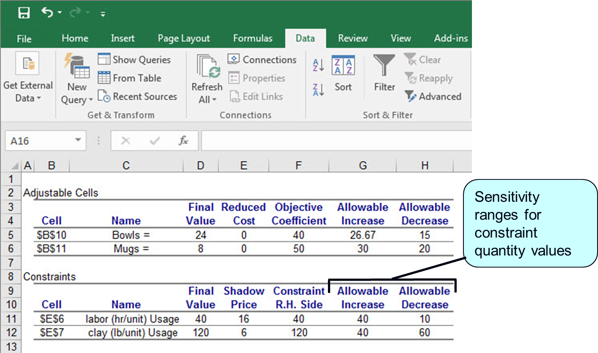
Other Forms of Sensitivity Analysis
Beyond objective coefficients and RHS values, three further what-if questions arise:
- Changing individual constraint parameters (a technology coefficient)
- Adding new constraints
- Adding new variables
Method
Each is answered the same way: change the model, re-solve, compare. Solver makes the re-solve cheap.
Changing a Constraint Parameter
Suppose bowls required 2 hours of labor instead of 1:
\[ 2x_1 + 2x_2 \le 40 \]
The labor line pivots on its \(x_2\)-intercept: the feasible region shrinks and the optimal corner moves.
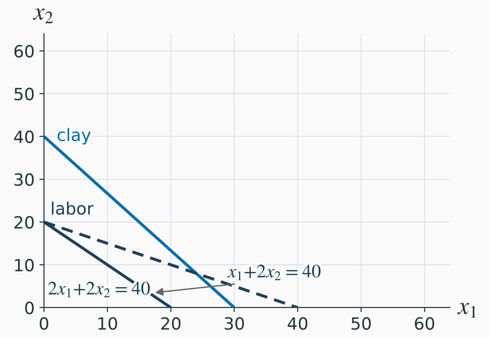
Adding a New Constraint: Packaging
Adding a packaging constraint to the Beaver Creek model:
\[ 0.20x_1 + 0.10x_2 \le 5 \ \text{hours} \]
Before
24 bowls, 8 mugs, \(Z = \$1{,}360\)
After
20 bowls, 10 mugs, \(Z = \$1{,}300\)
A new binding constraint can only hurt the objective (or leave it unchanged): here profit drops by $60.
Adding a New Constraint in Excel
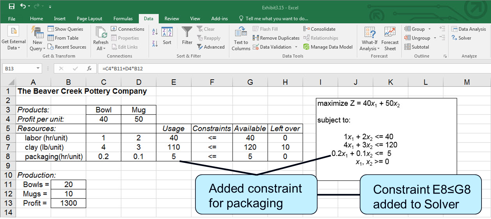
Adding a New Variable: Cups
Adding a third product \(x_3\) (cups) to the Beaver Creek model:
\[ \begin{aligned} \text{Maximize } Z ={}& \$40x_1 + \$50x_2 + \$30x_3 \\ \text{subject to:}\quad & x_1 + 2x_2 + 1.2x_3 \le 40 \ \text{hr of labor} \\ & 4x_1 + 3x_2 + 2x_3 \le 120 \ \text{lb of clay} \\ & x_1,\, x_2,\, x_3 \ge 0 \end{aligned} \]
Result
Solving shows no effect on the original solution: cups are not profitable enough to enter the mix, and \(x_3 = 0\) at the optimum.
Shadow Prices (Dual Variable Values)
Shadow Price
The marginal value of one additional unit of a resource: the change in \(Z\) per unit increase in the constraint’s RHS.
- Labor: $16 per hour (the number from the 60-hour experiment)
- Clay: $6 per pound
Validity
A shadow price is valid only within the RHS sensitivity range of its constraint: labor \([30, 80]\), clay \([60, 160]\). Outside the range, the binding constraints change.
Shadow Prices in the Sensitivity Report
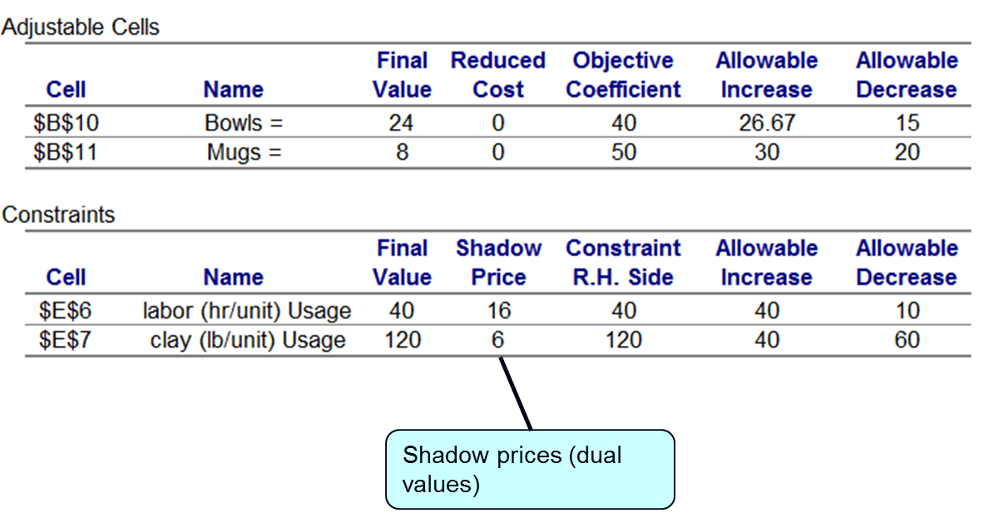
Shadow Prices: Solution Screen
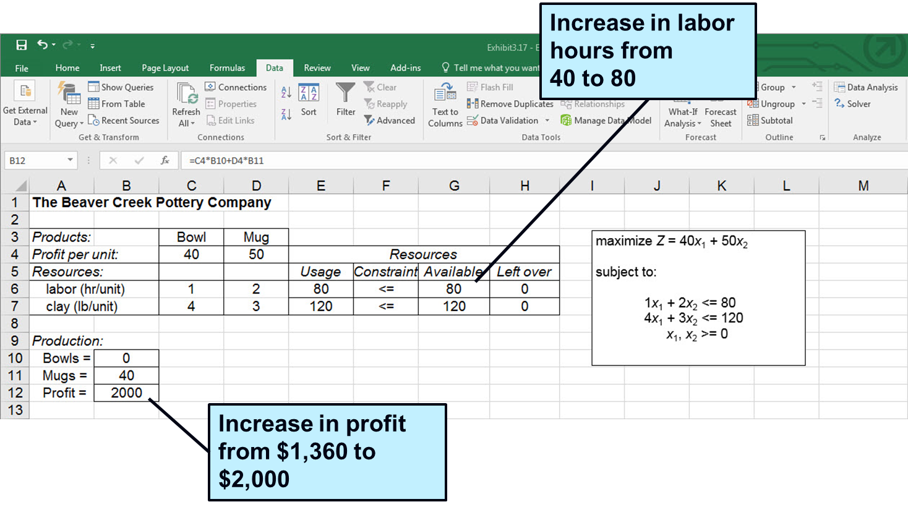
Practice Problems
Example Problem: Airplane Parts
Problem Statement
A firm produces two airplane parts (no. 1 and no. 2) through three manufacturing stages: stamping, drilling, and finishing. With \(x_1, x_2\) the number of each part produced:
\[ \begin{aligned} \text{Maximize } Z ={}& \$650x_1 + \$910x_2 \\ \text{subject to:}\quad & 4x_1 + 7.5x_2 \le 105 \ \text{(stamping, hr)} \\ & 6.2x_1 + 4.9x_2 \le 90 \ \text{(drilling, hr)} \\ & 9.1x_1 + 4.1x_2 \le 110 \ \text{(finishing, hr)} \\ & x_1,\, x_2 \ge 0 \end{aligned} \]
Solve graphically and with Excel Solver.
Airplane Parts: Graphical Solution
The stamping and drilling constraints bind at the optimum; finishing has slack.
Optimal Solution
\(x_1 = 5.97,\; x_2 = 10.82\)
\(Z = \$13{,}722.49\)
Fractional parts are fine here: interpret as a production rate.
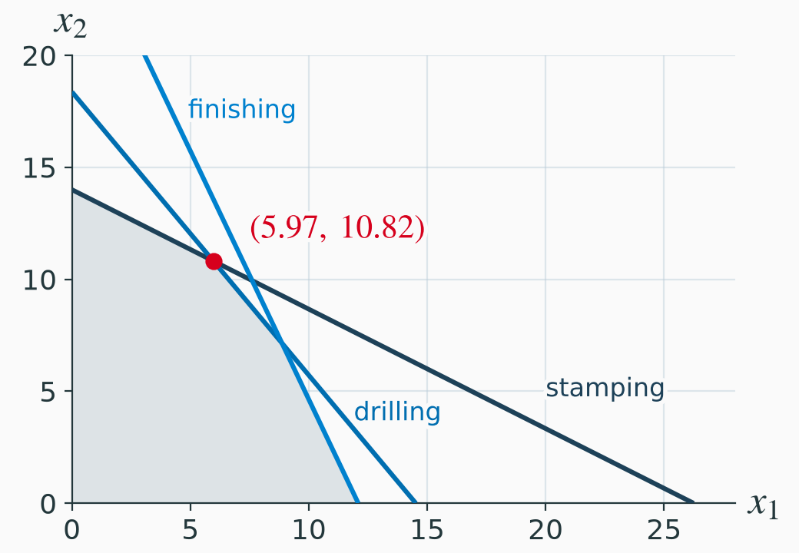
Airplane Parts: Explorer
Three stages, two of them binding. Find the profit that makes finishing bind instead.
Show code
apResetter = {
apResetClicks;
if (apResetClicks > 0) {
viewof apParams.value = LP.baseParams(ap_lp);
viewof apParams.dispatchEvent(new Event("input", {bubbles: true}));
viewof apParts.value = LP.partsOf(ap_lp);
viewof apParts.dispatchEvent(new Event("input", {bubbles: true}));
}
return apResetClicks;
}Airplane Parts: Excel Solution
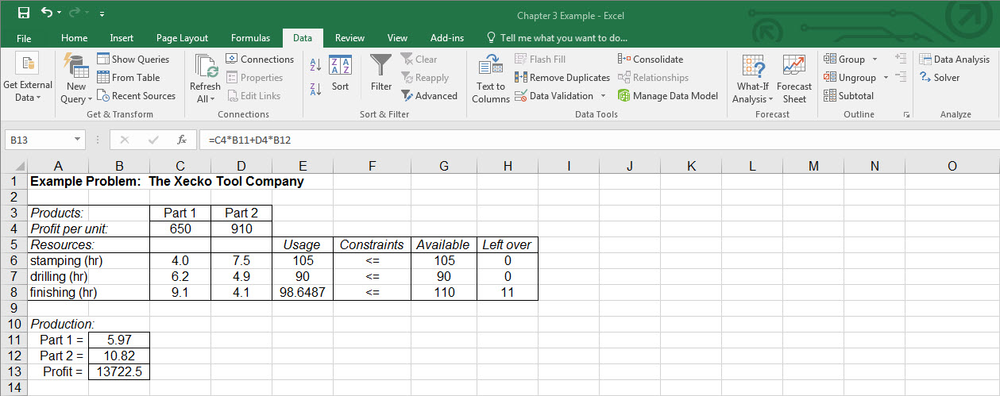
Taco Loco
Formulate the LP
Taco Loco has narrowed a new menu addition to three products, X, Y, and Z, each made from a different combination of beef, cheese, and beans. Selling prices: X for $17, Y for $13, Z for $14. Resources needed per unit:
| X | Y | Z | Available (lb) | |
|---|---|---|---|---|
| Beef | 2 | 3 | 4 | 28 |
| Cheese | 9 | 8 | 11 | 80 |
| Beans | 4 | 4 | 2 | 68 |
Formulate the LP that maximizes revenue. We will solve it with Solver and read the sensitivity report together.
Summary
Summary
Core Takeaways
- Solver finds the optimal corner and prints a sensitivity report
- Coefficient ranges: where the solution stays optimal
- Shadow price: marginal value of one more unit of a resource
Watch Out For
- Ranges assume one parameter changes at a time
- Shadow prices are valid only inside the RHS range
- Linearize ratio constraints before Solver
Bottom Line
The optimal solution starts the analysis; the sensitivity report is the conversation with management about what is worth buying, and at what price.
Questions?
Computer Solution and Sensitivity Analysis
Appendix
Appendix
Sensitivity reference
Appendix: Hot Dog Mixture with Pork
Decision variables: \(x_1\) = lb of chicken, \(x_2\) = lb of beef, \(x_3\) = lb of pork ($4/lb)
\[ \begin{aligned} \text{Minimize } Z ={}& \$3x_1 + \$5x_2 + \$4x_3 \\ \text{subject to:}\quad & x_1 + x_2 + x_3 = 1{,}000 \\ & x_1 \ge 500 \\ & x_2 \ge 200 \\ & x_1 - 2x_2 - 2x_3 \ge 0 \quad \text{(ratio } x_1/(x_2 + x_3) \ge 2\text{)} \end{aligned} \]
Solution
\(x_1 = 800\), \(x_2 = 200\), \(x_3 = 0\), \(Z = \$3{,}400\). Pork is priced out: it substitutes for cheaper chicken under the ratio rule, and the beef minimum already fills the non-chicken share of the batch.
Appendix: Beaver Creek Sensitivity Card
| Parameter | Base | Range | Shadow Price |
|---|---|---|---|
| \(c_1\) (bowl profit) | $40 | \([25,\, 66.67]\) | |
| \(c_2\) (mug profit) | $50 | \([30,\, 80]\) | |
| Labor (hr) | 40 | \([30,\, 80]\) | $16/hr |
| Clay (lb) | 120 | \([60,\, 160]\) | $6/lb |
Base optimal solution: \(x_1 = 24\), \(x_2 = 8\), \(Z = \$1{,}360\).
Source: Taylor, B. W. (2019). Introduction to Management Science, 13th ed., Pearson, Ch. 3.